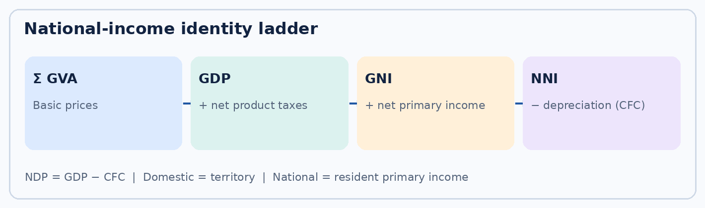
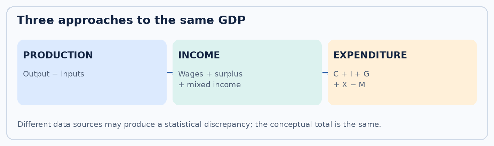
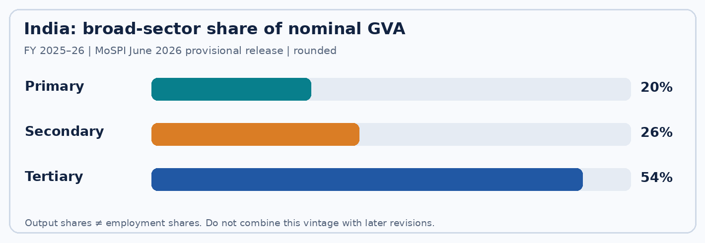

Syllabus, index and topic summary
TGPSC Group I | Paper IV: Economy and Development | Unit I: Indian Economy and Development | Topic 1: National Income. Draft prepared 23 October 2026. Academic status: NOT APPROVED.
Notification 02/2024 syllabus wording: “National Income -Concepts and Measurement of National Income- Nominal and Real Income; Structure and growth of Indian economy – Sectoral trends in National Income of India”. This line was directly checked against the Commission's original Notification No. 02/2024, Annexure-II, printed page 31 (PDF page index 30), on 27 October 2026. This establishes syllabus correspondence (R1) only; it does not establish academic correctness. [S10]
| Exact syllabus component | Sections | What to be able to explain |
|---|---|---|
| Concepts of national income | 1–2 | Territory/residence, production boundary, GDP/GVA/GNI/NDP/NNI |
| Measurement | 3, 5 | Production, income, expenditure, source institutions, revisions |
| Nominal and real income | 4 | Deflator, base year, inflation, real per-capita income |
| Structure of Indian economy | 6–10 | Primary, secondary, tertiary sectors; productivity, jobs |
| Growth and sectoral trends | 6–11 | Latest data vintage, sectoral share vs growth, Telangana comparisons |
| Policy implications | 10–12 | Informality, regional inequality, fiscal policy, green accounting |
Central thesis: National income is an accounting system for production and primary income, not a complete measure of welfare. The production, income and expenditure methods should reconcile conceptually; practical data constraints produce revisions and discrepancies. Real growth must be separated from inflation, and sectoral output shares from employment. India's services-led structural change creates opportunities but also employment, distribution and environmental questions. Telangana's service-intensive economy makes these distinctions especially relevant.
How to study: Read sections 1–5 to master identities and methods; sections 6–11 to interpret Indian and Telangana sectoral change; section 12 for evaluation. Attempt the MCQs before reading explanations, then use the six 200–250-word models as timed writing practice. All questions are original practice; no authenticated official PYQ is asserted.
Detailed textbook notes: National income and India's structural transformation
1. The economic territory, the accounting period and the production boundary
What is actually being measured?
National income accounting is a disciplined way to convert millions of unlike transactions into a coherent statement about production, income and spending. It is not a cash-counting exercise. The first boundary is economic territory: GDP counts production by resident producer units operating within India's economic territory, regardless of the nationality of their shareholders. The second boundary is time: Indian official annual estimates are normally presented for April–March financial years. The third boundary is production: the accounts include market output and certain imputed services, but exclude many activities whose economic and social importance is real. A software service produced in Hyderabad by a foreign-owned subsidiary enters India's GDP; a salary earned by an Indian resident working abroad is not automatically domestic production in India. Income from abroad affects the national-income aggregates through the residence rules for primary income.
The System of National Accounts (SNA) provides an internationally comparable conceptual framework. The National Statistics Office (NSO) under the Ministry of Statistics and Programme Implementation (MoSPI) compiles national accounts. In India, the Reserve Bank of India (RBI) contributes financial and external-sector statistics; the Ministry of Corporate Affairs (MCA) provides corporate filings; the Controller General of Accounts (CGA), Comptroller and Auditor General (CAG) and state accounts inform public-sector estimates; the National Sample Survey and enterprise surveys capture activities less visible in administrative data. State Directorates of Economics and Statistics compile GSDP using harmonised guidance, while state-specific records supply crop, industry and government detail. Statistical capacity and consistency are thus administrative questions, not merely mathematical ones. [S01–S04]
Production, welfare and invisible work
A hospital's fee-charging treatment is counted as production; government hospital output is valued largely by cost because there is no observable market sale price. Owner-occupied housing generates an imputed rental service; otherwise countries with high home ownership would appear artificially poorer than those with more renters. In contrast, unpaid care by family members—cooking, cleaning and child supervision—normally falls outside the SNA production boundary even though it sustains paid employment. The distinction does not mean unpaid work lacks value; it means GDP is a particular accounting construct. India's Time Use Survey helps reveal this excluded labour. A woman in rural Telangana who spends hours obtaining water may contribute to household welfare without creating measured market output. If piped water releases her time for paid work, measured GDP may rise even if total socially useful effort changes less dramatically.
The production boundary also excludes the simple resale of a used asset as new output. A second-hand tractor sale transfers ownership; the dealer's current service margin can count, but the tractor's original value was counted when first produced. Financial asset trades similarly transfer claims; fees for brokerage and financial intermediation may be current output. Illegal or informal production can be within the conceptual production boundary even when measurement is difficult. Distinguish conceptual inclusion from observed coverage; a weak data source can underestimate a sector without changing the definition of GDP.
Practical policy consequences and competing views
Proponents of GDP emphasise its replicability, time series, fiscal relevance and usefulness for evaluating productive capacity. Critics note distribution, ecological damage, unpaid work and quality differences. Both points matter. A state can experience rising real GSDP while a drought reduces groundwater, migration increases and household debt worsens. A credible policy dashboard combines real output and productivity with employment, nutrition, educational achievement, air quality and district disparities. The examination trap is to describe GDP as an index of happiness or as the sum of every rupee of expenditure. GDP measures value added by current production, subject to specific conventions; welfare requires additional evidence.
2. GDP, GVA, NDP, GNI and NNI: the identity ladder
Gross value added and market-price GDP
An enterprise's gross value added (GVA) equals gross output minus intermediate consumption. A textile mill buying yarn for ₹60 lakh and selling cloth for ₹100 lakh creates ₹40 lakh of GVA before depreciation, even though its gross sales are ₹100 lakh. The yarn supplier's value added is counted separately; adding gross sales at each stage would double-count the same material. At the economy-wide level, GDP at market prices = sum of GVA at basic prices + taxes on products − subsidies on products. A tax on the sale of a product affects the buyer's market price but is not part of the producing firm's basic-price value added. Taxes on production that are not tied to individual products enter the basic-price valuation differently; do not collapse all taxes into one adjustment. [S02]
A numerical bridge makes the distinction concrete. Suppose agriculture, industry and services produce ₹20, ₹30 and ₹50 lakh of basic-price GVA. Aggregate GVA is ₹100 lakh. If product taxes are ₹12 lakh and product subsidies ₹4 lakh, GDP at market prices is ₹108 lakh. The ₹8-lakh difference is net product taxes, not extra factory production. This identity is especially important when indirect-tax policy changes: GDP growth and GVA growth can diverge because of net product taxes.
Domestic versus national, gross versus net
Domestic describes the location of production; national follows the residence of income recipients. Gross includes consumption of fixed capital (CFC), the economic depreciation of assets; net deducts CFC. Consequently NDP = GDP − CFC; GNI = GDP + net primary income from the rest of the world (NPIROW); NNI = GNI − CFC. The term 'net factor income from abroad' remains common in textbooks, but official SNA terminology is net primary income from the rest of the world. It covers compensation of employees and investment-related primary income, with residence rules. It is not equal to remittances: a family transfer from a migrant may be a secondary-income transfer rather than primary income. Gross National Disposable Income further adjusts for net current transfers from abroad. [S01–S03]
Suppose GDP is ₹1,000 crore, CFC ₹100 crore and net primary income from abroad −₹20 crore. NDP = ₹900 crore, GNI = ₹980 crore and NNI = ₹880 crore. A negative external primary-income balance means income payable to non-residents exceeds primary income receivable from abroad. The economy's GDP does not fall merely because foreign investors receive dividends; GNI differs from GDP. In practice, GDP is the headline production aggregate, while per-capita NNI at current prices is often used as an Indian 'per-capita income' measure. The exact definition and price basis must be stated.
Why multiple aggregates coexist
For a Telangana policymaker assessing roads and logistics, GSDP/GVA shows production within the state. For household purchasing power, per-capita NNI and real consumption are more relevant, but neither describes distribution. For fiscal sustainability, gross capital formation, CFC and the capital stock matter: a road that deteriorates faster than it is maintained can contribute to gross activity while reducing net wealth. Critics sometimes demand replacing GDP with NNI because net aggregates account for depreciation. Yet CFC estimation is uncertain, especially for changing technologies, so gross and net indicators should be read together. The rigorous exam answer states each identity, the economic distinction it captures and the data limitations that remain.
3. The three measurement approaches and the double-counting problem
Production or value-added approach
The production approach totals value added across industries and institutional sectors, then adds net taxes on products to obtain market-price GDP. It is suited to agriculture, manufacturing, construction, trade and public services when output and input data exist. In farming, crop production, livestock, fisheries and forestry are valued with quantity and price information; intermediate inputs include seed, fertiliser, feed, fuel and services. In formal manufacturing, accounts and surveys can separate sales from raw materials. In unincorporated enterprises, sample surveys and labour-productivity benchmarks may be needed. The critical point is to estimate current value added, not simply multiply all turnover by one rate.
The common classroom illustration is a wheat–flour–bread chain. A farmer sells wheat for ₹30, a mill sells flour for ₹50 and a bakery sells bread for ₹90. Assuming each purchases only the preceding product as an intermediate input, their value added is ₹30, ₹20 and ₹40 respectively; GDP contribution is ₹90, not ₹170. This assumes no imports, taxes, subsidies or other intermediates for simplicity. If the bakery buys imported packaging, that input must also be subtracted from its gross output. A supply-and-use table reconciles flows across sectors and reduces the risk that one industry's output is counted without another industry's input.
Income approach
The income approach totals compensation of employees, gross operating surplus, gross mixed income and taxes less subsidies on production and imports, with the valuation bridge to market-price GDP. Wages and salaries are not the entire income generated: profits, rent-like operating returns and mixed incomes of self-employed producers also matter. Mixed income is especially important for small Indian businesses and farmers, where labour and ownership returns cannot be separated cleanly. A family shopkeeper's income combines the owner's work and capital; mechanically classifying it all as profit distorts labour's share. Income estimates require consistent treatment of government services and depreciation. [S01–S03]
Expenditure approach
The expenditure identity is GDP = PFCE + GFCE + GCF + exports − imports, with statistical discrepancies and detailed subcomponents reported in published accounts. PFCE is private final consumption expenditure, GFCE government final consumption expenditure and GCF gross capital formation (including gross fixed capital formation, inventories and valuables as defined). In the familiar shorthand, Y = C + I + G + (X − M), but 'I' is real investment in produced assets and inventories, not buying shares in a stock exchange. Imports are subtracted because some consumption, investment and government purchases include goods produced abroad; exports are added because domestic production sold abroad is not in domestic final spending. [S02]
If households spend ₹500, government ₹150, gross investment ₹250, exports ₹120 and imports ₹170, measured GDP is ₹850 before any discrepancy. The three approaches should in principle produce the same aggregate because every produced final good generates income and is ultimately used. They need not agree exactly in real data: reporting lags, valuation differences and missing informal activity create a statistical discrepancy. For examination purposes, never present the discrepancy as a 'fourth source of GDP'. It is a reconciliation item. India’s new-series MoSPI FAQs explicitly discuss how published discrepancies can be displayed transparently rather than forced to zero. [S03]
Institutions, strengths and limitations
Production estimates can be weak for rapidly changing digital services and informal enterprises; income estimates can suffer from mixed-income classification; expenditure estimates can struggle with inventories, household consumption surveys and external-trade adjustments. Rather than declaring one approach universally superior, ask which source is timely and complete for a sector. NSO integrates MCA21 company filings, GST data, government budgets, crop estimates, industrial surveys, financial-sector information and enterprise surveys. A district administrator should not assume that a rise in registered GST turnover proves the same increase in real output: inflation, formalisation and changes in compliance also affect receipts. Triangulation across sources is the basis of credible national accounts.
Worked national-accounts reconciliation: read the 5 June 2026 tables correctly
The National Statistics Office's 5 June 2026 Provisional Estimates (PE) for FY 2025–26 provide a useful test of whether the identities are understood rather than memorised. All amounts in this paragraph are ₹ crore at constant 2022–23 prices, taken from Statement 1 of that dated release. GVA at basic prices is 2,94,91,088 and net taxes on products are 28,20,946. The bridge is therefore GDP at market prices = 2,94,91,088 + 28,20,946 = 3,23,12,034. The product-tax bridge is not another productive sector: it changes the valuation basis from basic to market prices. Do not add net product taxes to GDP a second time. [S05]
The same table reports GNI = 3,18,65,977. Hence net primary income from the rest of the world = GNI − GDP = −4,46,057. This is an accounting residual derived from the published aggregates, not a direct measure of migrant remittances: personal transfers usually belong to secondary income, while GNI adjusts for primary income. The table reports NNI = 2,74,86,593; therefore consumption of fixed capital = GNI − NNI = 43,79,384. A negative external primary-income balance does not imply that India's domestic production was negative; it means GNI was below GDP in this vintage. [S05]
Expenditure reconciliation requires care. The same statement lists consumption, capital formation, exports, imports and a statistical discrepancy. Do not omit changes in stocks or valuables, or assume independently measured expenditure components add to published GDP without a discrepancy. In the constant-price table, the published discrepancy for FY 2025–26 is 3,89,909 crore. It is a measurement-reconciliation item, not a new physical product or an invitation to adjust an individual sector's output. These numbers are a June 2026 provisional vintage; later revisions, including those incorporating updated industrial and price series, must be dated separately. Never combine the June 2026 GVA with a revised August 2026 GDP and describe the difference as product taxes. [S05]
Exam application. A 10-mark question may give GVA, product taxes and subsidies and ask for GDP; a 15-mark question may additionally ask why GDP, GNI and NNI differ. Write the identity first, show units and price basis, substitute numbers, explain the economic meaning, and end with the limits of the aggregate for welfare. For sectoral growth questions, distinguish constant-price rates from current-price sector shares before drawing conclusions about jobs or living standards.
4. Nominal versus real income, deflators and inflation
Price change is not output change
Nominal GDP values output at the prices of the current period. Real GDP values production at a reference-price basis designed to remove price effects. If a region produces 100 units at ₹10 each, nominal output is ₹1,000. Next year it produces 105 units at ₹12 each, giving nominal output ₹1,260: nominal growth is 26%, but quantity growth is only 5% under the simplified single-good example. A reader who calls the 26% increase 'real growth' mistakes inflation for productive expansion. At an aggregate level, quality changes, substitution, changing baskets and chain/volume techniques complicate the calculation, but the conceptual distinction remains.
The implicit GDP deflator = nominal GDP ÷ real GDP × 100 when the aggregates share a consistent reference. In the example it rises from 100 to 120. The deflator is not the Consumer Price Index (CPI): CPI tracks a specified basket of household consumption, including imported consumer goods, while the GDP deflator covers domestically produced final output, including investment and government services, and excludes imports as domestic output. WPI/PPI focus on producer-side prices for particular goods. A fall in the GDP deflator's growth does not necessarily imply households face low food inflation. Inflation, real growth and purchasing power require separate indicators.
Base-year revision and the 2026 break
On 27 February 2026, MoSPI released a new annual and quarterly national-accounts series with 2022–23 as the base year, replacing the 2011–12 series. A base-year revision is not simply a cosmetic rebasing of a graph. It can incorporate newer data, changed sector weights, improved deflation and expanded coverage, thereby revising nominal levels as well as real growth rates. MoSPI describes better use of GST, corporate and survey data and more granular deflators; it also describes double deflation in manufacturing, where output and intermediate inputs are deflated separately. The August 2026 quarterly update incorporated newly available producer-price and industrial-production series where appropriate. [S02–S04]
An honest historical chart labels the series vintage. Do not splice 2011–12-base GDP levels with 2022–23-base levels and attribute the discontinuity to an economic boom. Compare like with like or use officially reconstructed back series. Nor should a change in measured GDP be automatically interpreted as manipulation: methodological revisions can improve accuracy, but they warrant scrutiny of data sources, uncertainty and reproducibility. For mains, give both arguments—better representation of structural change versus reduced time-series comparability—and conclude that clear revision notes and access to microdata improve trust.
Real income per person and policy
Per-capita nominal income can rise even while purchasing power stagnates if prices increase. Real per-capita growth approximately reflects real aggregate growth minus population growth for small rates, but the exact relation is multiplicative: (1 + aggregate growth)/(1 + population growth) − 1. Neither average captures who receives the gains. A Hyderabad IT employee and a rain-fed farmer face different price baskets, housing costs and risks. If nominal wages rise 8% while the worker's relevant cost of living rises 10%, real purchasing power falls by about 1.8%. Inflation-indexed wage bargaining, poverty thresholds and budget projections should specify which deflator is appropriate; using the GDP deflator for household food affordability can mislead.
5. National income estimates in India: statistical institutions and revision cycle
How official numbers are assembled
The National Statistics Office (NSO) within MoSPI prepares national accounts using a system of industry and institutional-sector estimates. The framework separates non-financial corporations, financial corporations, general government, households and non-profit institutions serving households. Corporate accounts can supply operating results; banks and insurers have regulatory returns; government output uses budget and administrative data; households and unincorporated firms require sample-based methods. Agricultural output relies on crop area and production, livestock, fisheries and prices. The RBI's balance-of-payments data help distinguish domestic from national income. None of these sources is a perfect census of every transaction. [S01–S04]
Quarterly estimates are often extrapolated from benchmark levels using high-frequency indicators—GST, IIP, vehicle sales, rail freight, port traffic, company results, bank credit, crop forecasts and other series. This is faster than waiting for final annual accounts but more revision-prone. MoSPI's 5 June 2026 release explained that provisional FY 2025–26 estimates incorporated information from the fourth quarter unavailable at the February second-advance stage. It revised real GDP growth from the February estimate of 7.6% to 7.7% and estimated nominal GDP at ₹346.36 lakh crore in that release. The release called the figures provisional, not final. Subsequent releases can revise earlier quarters and years, especially when new PPI/IIP inputs are integrated. [S02, S05]
Data revisions are a feature, not automatically a defect
First and second advance estimates inform the budget and immediate policy. Provisional estimates incorporate fuller-year data. Revised estimates replace indicators with more complete administrative records, surveys and corporate results. Later benchmark revisions may change the underlying series. The responsible way to cite a number is aggregate + price basis + financial year + release vintage. Saying only 'India's GDP was ₹346 lakh crore' omits whether it is nominal, which year, and which release. A correct sentence is: 'MoSPI's June 2026 provisional estimate placed FY 2025–26 nominal GDP at ₹346.36 lakh crore in the 2022–23-base series.'
Data gaps remain substantial. Informal micro-enterprises close and open frequently; unpaid labour is not GDP production; digital platform work may cross establishment and worker classifications; informal rents and small services can be hard to observe. Survey response rates, price-index composition and firm-registration changes affect measured trends. Better GST coverage can make the formal sector appear to grow even if part of the change is migration from unregistered activity. Conversely, treating informal output as negligible would understate the economy. A strong national-accounting system invests in enterprise frames, periodic surveys, statistical independence, publication calendars and transparent revisions.
What states should do with national numbers
A Telangana district planning officer should compare state GSDP with national GDP only after checking base year, valuation, period and release status. State GSDP often lags national rebasing because DES teams must rebuild sectoral data using state records and MoSPI guidance. The national accounts FAQ confirms that NSO provides harmonised concepts while state DES offices compile local estimates. One cannot simply multiply national growth by Telangana's previous-year GSDP to produce an official state estimate. For a sector such as pharmaceuticals, firm headquarters and plant location must be handled consistently; for agricultural services, production and intermediary trade must not be conflated. [S03, S06]
6. Structure of the Indian economy: primary, secondary and tertiary sectors
Classifying activity correctly
The primary sector includes agriculture and allied activities, forestry, fishing and mining and quarrying. The secondary sector includes manufacturing, electricity, gas, water supply, other utilities and construction. The tertiary sector includes trade, transport, hospitality, communication, finance, real estate, professional services, public administration, education, health and other services. These are broad national-accounting classifications, not a hierarchy of social worth. Mining is commonly grouped with primary activity even though it is capital intensive; construction belongs to secondary activity even though it is often labour intensive. A technology firm's software output is normally a service even when it enables manufacturing.
In the June 2026 provisional estimates for FY 2025–26, MoSPI's nominal-GVA composition graphic assigned approximately 20% to primary activities, 26% to secondary activities and 54% to tertiary activities (rounding individual sub-sector shares). Services thus accounted for the largest share of measured GVA. The chart's approximate percentages must not be confused with employment shares, and the release vintage must be specified. The same release estimated real GVA growth at 7.9% and real GDP growth at 7.7%; they differ because net product taxes are not the same as basic-price GVA. [S05]
Growth contribution versus growth rate
A small sector can grow rapidly without driving much of aggregate growth. If services account for 55% of GVA and grow 8%, their weighted contribution is about 4.4 percentage points under a simple fixed-weight approximation. If agriculture accounts for 15% and grows 3%, its contribution is roughly 0.45 percentage points. These are illustrative, not official decompositions; chain/volume methods and changing weights complicate exact attribution. Equally, a large employment sector with low value-added share can indicate low labour productivity or disguised underemployment. A sector's share, growth rate, absolute increment and employment intensity answer different questions.
India's structural transformation has been service-heavy: IT, financial intermediation, business services and trade expanded rapidly, while manufacturing's ability to absorb workers into secure formal jobs has been more uneven. Agriculture's output share has fallen over decades, but it continues to support a disproportionately large share of livelihoods. This gap matters for productivity and rural–urban income differences. The Lewis dual-sector model predicts labour moving from low-productivity traditional activities into higher-productivity modern production. In India, the destination is often informal construction, small retail or gig work rather than high-wage factories; movement between sectors does not guarantee secure employment.
Competing interpretations
Optimists argue that services can leapfrog some manufacturing stages: exportable software, digital payments, design, logistics and global capability centres earn foreign exchange and create sophisticated jobs. Critics reply that high-skill services employ only part of the labour force, and manufacturing can offer a broader ladder for workers with varied education levels. Agriculture cannot be dismissed as 'backward': productivity growth in irrigation, storage, livestock, food processing and climate resilience can raise incomes and create demand for other sectors. The defensible policy mix supports labour-intensive industry, productive agriculture and inclusive services while monitoring environmental costs, employment quality and regional concentration.
7. Agriculture and allied activities: productivity, risk and measurement
Why value added differs from harvest value
Agricultural GVA includes crop, livestock, forestry and fishing output after intermediate inputs. The value of a farmer's harvest is not identical to the value added: fertiliser, seed, pesticides, hired machinery services, feed and energy have already been produced elsewhere. Where production is retained for household consumption, its estimated value can still be included in national accounts; the sale of crops is not the sole criterion. Real agricultural growth reflects volumes and deflation, not merely a rise in minimum support prices. Crop output is seasonal, and drought or unseasonal rain can cause sharp fluctuations in quarterly and annual estimates. [S02, S05]
Livestock and fisheries diversify rural income and can stabilize demand when crop yields fail, but disease, feed prices and cold-chain losses affect their productivity. Irrigation increases cropping intensity but may deplete aquifers. Mechanisation raises labour productivity while sometimes reducing demand for particular manual tasks; complementary rural industries and services determine whether displaced workers gain better jobs. Climate-smart agriculture must be assessed against costs, not only a technology's publicity. A paddy-to-pulses transition may conserve water and improve protein availability, but farmers need credible procurement, price insurance, seeds, extension and market access before changing a crop with familiar marketing channels.
Telangana examples and public choices
Telangana's irrigation projects, rice procurement, horticulture, livestock and fisheries offer concrete cases. The state government can influence agricultural productivity through extension, tank restoration, market yards, roads, power and credit facilitation; it cannot control the monsoon or global commodity prices. The policy debate over paddy expansion is a classic conflict between short-run farmer income security and long-run water sustainability. Large procurement commitments can encourage monoculture; abrupt withdrawal can expose small farmers to price collapse. The appropriate appraisal compares water per unit of value added, risk-adjusted farmer returns, nutritional outcomes and regional ecology rather than output tonnage alone.
At the measurement level, DES Telangana uses crop statistics and other local data to estimate agricultural GSVA. A high nominal value for a drought-affected crop can coexist with low real production if prices rose sharply. A farmer's disposable income may be worse than the aggregate even if gross output rises, because fertiliser and labour costs can increase faster. Consequently, agriculture policy needs GVA, farm-household income, yield, cost-of-cultivation and water-use indicators. This is why national-income accounting is necessary but not sufficient for agricultural development planning.
8. Manufacturing, construction and utilities: the secondary-sector transformation
Value addition in factories and supply chains
Manufacturing transforms intermediate inputs into new products. A Hyderabad pharmaceutical manufacturer may buy active ingredients, solvents, packaging, laboratory services and electricity; its value added is the difference between gross output and intermediate inputs, not the total invoice value. Research and development, quality control, process innovation and branding can raise value added without proportionate increases in physical tonnage. Export manufacturing can earn foreign exchange but also import substantial components. Gross export figures therefore overstate domestic value added when imported intermediates are large; value-added trade analysis is useful for industrial policy. A factory's headquarters location and the site where production occurs must be distinguished in regional accounts.
Manufacturing GVA is affected by output prices, input prices, inventories, capacity utilisation and productivity. Double deflation—deflating output and intermediate inputs separately—is particularly important when the price of imported chemicals or fuel moves differently from finished-product prices. The 2022–23-base national accounts strengthened this practice. It can change estimated real GVA without any change in factory employment. Industry surveys, MCA filings, GST and the Index of Industrial Production (IIP) capture different dimensions; IIP measures volume movements in selected industrial output, not comprehensive manufacturing value added. [S02–S05]
Construction and infrastructure
Construction converts materials and labour into structures: roads, buildings, irrigation works and industrial facilities. It can absorb relatively less-skilled workers and stimulate cement, steel, transport and services. However, an unfinished project can add current construction output while delivering little immediate public benefit. Infrastructure's long-run return depends on utilisation, maintenance, location and complementary investment. The same ₹1,000 crore spent on an underused flyover and on reliable rural roads may generate similar short-term measured construction activity but very different productivity and equity outcomes. Cost overruns and delays are therefore development failures even when some expenditure appears in GDP.
Electricity, gas, water and utilities support other sectors and create direct value added. Electricity output must be distinguished from subsidised retail tariffs: a subsidy affects fiscal and valuation accounts, not the physical generation of power. Reliable supply reduces downtime for MSMEs and cold chains; poor DISCOM finances can delay maintenance and crowd out investment. The sector's small share of nominal GVA can conceal its large role as an input into the rest of the economy.
Telangana industrial structure and contestation
Telangana's life-sciences and bulk-drug clusters, IT-enabled manufacturing services, aerospace and defence supply chains, and Hyderabad-area construction illustrate agglomeration economies. Firms gain from skilled labour pools, supplier networks, research institutions and transport connections. But clustering can raise land prices and displace low-income households, while pollution from chemical units imposes costs not deducted from conventional GDP. A sound industrial policy measures domestic value added, formal employment, wage quality, pollution intensity, local sourcing and resilience, not only investment proposals or industrial-park acreage.
One view favours targeted industrial incentives and infrastructure because coordination failures prevent private investment. Another warns that discretionary subsidies can create rent-seeking and favour large firms over small competitors. The defensible compromise is transparent, time-bound incentives linked to measurable performance, competitive access to land and credit, strong environmental enforcement and independent evaluation. Industrial growth is not automatically inclusive, and labour absorption cannot be inferred from the growth of manufacturing GVA alone.
9. Services: productivity, trade, public provision and digital measurement
Why services dominate value added
Services include a wide range of activities with different productivity and labour conditions: information technology, finance, logistics, health, education, retail trade, hotels, professional services, real estate and public administration. A software exporter generates value added from wages, profits and capital services after subtracting purchased inputs. A small street vendor may have a thin margin despite high turnover. A government teacher's service output is not priced through a competitive market; national accounts value much non-market government output using cost components. A single 'services' growth rate therefore conceals enormous heterogeneity. [S01–S05]
High-productivity tradable services can grow without massive physical infrastructure, but depend on education, broadband, intellectual property, data security and access to global clients. Financial services support investment and risk management, while poorly regulated lending can amplify financial crises. Real estate includes actual rents and imputed owner-occupied housing services; a rise in land prices alone is not automatically current production. Digital platforms blur industry boundaries: a ride-hailing app combines software intermediation with passenger transport supplied by drivers. Accounts must avoid counting both the platform's gross transaction value and the driver's service value as independent final output.
Services-led development: strengths and limits
India's services-led growth is often described as a comparative advantage because of English-language skills, engineering education, telecommunications and global outsourcing. The counterargument is that advanced business services may be skill-biased, geographically concentrated and unable to employ every worker leaving agriculture. A small informal shop is a service enterprise but does not have the same productivity trajectory as an exportable AI engineering team. Policymakers should therefore distinguish modern tradable services from local low-productivity services, and examine worker transitions between them.
The 5 June 2026 MoSPI release reported robust real growth in the tertiary sector for FY 2025–26 and placed the tertiary sector at the largest share of nominal GVA. Those observations do not establish that every service sub-sector prospered, that all jobs became formal or that consumption inequality fell. A balanced mains answer explains why service exports can finance imports and support urban employment, while calling for broad foundational education, skills, childcare, public transport and affordable housing to spread the benefits. [S05]
Hyderabad and the Telangana spillover question
Hyderabad's IT and life-sciences ecosystems create direct employment, commercial real-estate demand, logistics and household consumption. Their indirect effects can extend to surrounding districts through commuting, food supply and subcontracting. Yet growth can also widen spatial inequalities: landowners near an IT corridor gain from appreciation, while renters face rising costs; workers without technical credentials may enter low-wage security, delivery or housekeeping jobs. Telangana's Socio-Economic Outlook 2026 identifies a strongly service-oriented state economy; the official report should be read alongside district-level income, employment and access indicators. [S06–S07]
Policy choices include decentralising skill centres and digital infrastructure, promoting services in tier-two towns, and improving municipal housing and transport. Public health and education are not merely consumption: they improve human capital and productivity, even though their benefits are only partly visible in current-period GDP. The long-run development question is how service-sector surplus translates into more widespread capabilities rather than only higher urban asset prices.
10. Sectoral change, productivity and employment: interpreting India's growth path
The productivity arithmetic
Aggregate labour productivity can rise because each sector becomes more productive or because workers move toward sectors with higher productivity. A worker shifting from subsistence farming to a formal factory may raise aggregate value added even if productivity within each sector is unchanged. But if the worker instead enters unstable casual construction, higher average value added may not mean secure wages or social protection. The correct empirical comparison uses real GVA per worker with sectorally consistent employment data; a share of GVA alone does not establish a sector's employment contribution. [S08]
A hypothetical economy illustrates the problem. Suppose agriculture produces 15% of value added with 40% of workers, while services produce 55% with 35% of workers. Output per worker in agriculture is far below the economy-wide average, but not every service job is high-productivity. Raising farm productivity can reduce poverty directly, while job-rich manufacturing and formal services provide destinations for labour movement. The pace and quality of transitions depend on land markets, education, women's mobility, childcare, labour institutions and urban housing.
Historical phases and reforms
At independence, India was predominantly agrarian, with limited industrial capacity and widespread poverty. Planning and public-sector investment built heavy industry and infrastructure; the Green Revolution raised foodgrain productivity in selected regions, though irrigation and landholding inequalities shaped gains. The 1991 reforms increased competition, external integration and private investment, while also exposing firms and workers to adjustment pressures. The 2000s expansion of information technology and business services accelerated services exports. More recent policy has focused on manufacturing incentives, logistics, digital infrastructure and formalisation. These are broad phases, not a claim that a single reform explains all growth.
Sectoral transitions also respond to global demand, oil prices, technology and climate. Export-oriented IT services may slow when overseas firms cut spending; construction can surge during public capital-expenditure cycles; agriculture remains sensitive to monsoons. An economy with a diversified productive base can be more resilient than one reliant on a narrow set of urban services or crops. Sectoral policy must account for complementarities: manufacturing requires logistics and finance; agriculture requires storage and transport; services require reliable power and education.
Distribution, informality and gender
A shift in output share is not synonymous with a shift in employment share. Informal work can persist inside modern sectors through contracting, home-based production and platform arrangements. Women's paid employment is constrained by unpaid care, transport safety, social norms and skill mismatches; increased female labour-force participation cannot be assumed from GDP growth. Caste and regional inequalities influence who gains access to capital, education and markets. Productivity policy should therefore be paired with labour standards, portable social security, childcare, anti-discrimination and quality public services.
For Telangana, compare a Hyderabad digital-services worker, a Sangareddy factory employee, a construction migrant and a smallholder farmer. Their exposure to inflation, health shocks and bargaining power differs even when state GSDP grows. A good answer evaluates output, employment, real earnings, resilience and ecological sustainability together. The wrong answer celebrates a tertiary-sector majority as proof that structural transformation is finished.
11. Telangana GSDP, GSVA and per-capita income: comparisons that are defensible
What state accounts measure
Gross State Domestic Product (GSDP) is the value of current production attributable to a state's economic territory, with a market-price valuation bridge analogous to national GDP. Gross State Value Added (GSVA) is the sum of basic-price value added of industries operating in the state. Net State Domestic Product (NSDP) deducts consumption of fixed capital from GSDP. State per-capita income is generally reported using per-capita NSDP at current prices, but the precise table definition must be checked. GSDP is not the same as state-government revenue or budget size. Telangana's state budget can be large relative to a sector's GSVA without the government owning that sector's production. [S03, S06]
The Government of Telangana's Socio-Economic Outlook 2026, linked from the state portal, reports an estimated FY 2025–26 GSDP of approximately ₹17.82 lakh crore, 10.7% current-price growth and per-capita income of approximately ₹4.19 lakh under the report's release and price conventions. The state's investment portal separately expresses its GSDP as roughly US$201 billion, which involves an exchange-rate conversion and should not be treated as a different underlying physical measure. These are state-government estimates, not independently audited household incomes. Their publication precedes some subsequent national methodological revisions, so direct cross-series comparisons require a base-year and vintage check. [S06–S07]
Interpreting the sectoral profile
Telangana's state report depicts services as the dominant contributor to GSVA, supported by Hyderabad's IT, finance, professional services, real estate, trade and public services. Agriculture remains important for rural livelihoods, while manufacturing, pharmaceuticals, construction and utilities contribute to secondary-sector output. A high service share can raise per-capita output without distributing gains evenly across districts. District domestic-product estimates may be sensitive to where establishments report activity, commuting patterns and regional price differences. The high income measured in a corporate cluster is not necessarily the income of all households residing there.
To compare Telangana and India, select a common year and common concept: current-price GSVA shares, constant-price GSDP growth or current-price per-capita NSDP. Do not compare Telangana's nominal growth with India's real growth and claim outperformance; that confounds price and volume effects. Nor should a state per-capita figure be compared with a national per-capita GDP figure without noting the net-versus-gross difference. A defensible comparison may state that the official state report projects faster current-price GSDP growth, then explicitly qualify methodological comparability.
Policy consequences
Concentration of value added in the Hyderabad metropolitan economy generates fiscal and infrastructure opportunities but also pressure on land, water, transport and housing. Balanced regional development can improve productivity in other districts through industrial nodes, logistics, farm processing, higher education and broadband. The relevant evidence is not just whether the state attracts investment but whether new jobs, real earnings and public services improve outside the core. A high state average does not eliminate pockets of deprivation. The examiner expects a candidate to move from accounting concepts to a reasoned discussion of regional equity, investment and ecological constraints.
12. National income as a policy instrument—and its limits
What a finance department learns from GDP
National-income accounts inform tax projections, fiscal-deficit ratios, debt sustainability, monetary-policy analysis and the distribution of central and state resources. When nominal GDP grows, the denominator of debt-to-GDP and deficit-to-GDP ratios rises, but this does not mean the government has received equivalent additional cash. Tax buoyancy depends on composition, exemptions, compliance and price effects. Real GDP growth signals expanding production, yet it may be concentrated in low-tax or capital-intensive sectors. Government expenditure can support demand in a downturn, but its long-run return depends on project quality and crowding-in of private investment.
The RBI uses activity, inflation and financial indicators in monetary-policy decisions; it does not target GDP mechanically. A central bank may face a supply shock where output slows while food prices rise. Stimulating demand cannot create rain or immediately repair crop damage. National-income components help identify whether growth is driven by private consumption, investment, government demand or net exports. A consumption-led expansion may be fragile if financed by unsustainable borrowing; investment-led growth may increase future capacity but requires careful assessment of debt and project productivity.
Growth versus development and environmental accounting
GDP does not deduct all environmental depletion or social costs. A mining boom can increase measured GVA while exhausting a non-renewable resource and damaging local water. Conventional CFC captures produced-capital depreciation, not all natural-capital losses. Environmental-economic accounting and natural-capital statistics can complement national accounts; they should not be presented as if a universally agreed 'green GDP' automatically replaces published GDP. Human-development indicators, inequality measures and household consumption data provide different lenses. [S01, S09]
One school argues that growth must precede redistribution because the tax base finances public services. Another argues that early investment in health, education and social protection raises productivity and prevents exclusion. The tension is partly false: poorly designed transfers can undermine incentives, but high-quality foundational services are productive investments. Telangana's challenge is to use the fiscal and private-investment opportunities generated by Hyderabad to strengthen district capabilities, climate resilience and job creation without eroding the engines of growth.
A disciplined mains conclusion
A national-income answer should close with a three-part test. First, measure correctly: specify the aggregate, price basis, base year, geography and revision vintage. Second, interpret cautiously: distinguish value-added shares from employment, nominal from real, domestic from national and growth from welfare. Third, apply to policy: link sectoral change to productive jobs, public services, distribution and ecological resilience. This is more persuasive than reciting a list of abbreviations or claiming that higher GDP by itself proves successful development.
Visual learning and exam tables
Diagram A — National-income identity ladder

Start with basic-price GVA, add net product taxes to get market-price GDP; adjust for net primary income from abroad to get GNI; subtract CFC to get NNI. Alternatively subtract CFC directly from GDP to get NDP. Do not confuse external primary income with current transfers.
Diagram B — Three methods, one conceptual aggregate

Production: value added. Income: factor incomes and taxes/subsidies. Expenditure: final consumption, capital formation and net exports. The three converge conceptually; observed estimates may show statistical discrepancy.
Diagram C — Indian sectoral composition (illustrative official-release vintage)

Broad-sector percentages are rounded approximations from the 5 June 2026 MoSPI FY 2025–26 provisional release's current-price GVA graphic: primary about 20%, secondary about 26%, tertiary about 54%. This is not an employment distribution and is not necessarily identical to a subsequently revised release.
Comparison table: frequently confused measures
| Measure | Key distinction | Common mistake |
|---|---|---|
| GDP vs GVA | GDP market price includes net product taxes; GVA is basic-price value added | Adding all sector sales |
| Domestic vs national | Territory vs residents' primary income | Counting every remittance as GNI |
| Gross vs net | Net subtracts consumption of fixed capital | Confusing CFC with product taxes |
| Nominal vs real | Current prices vs volume-adjusted values | Calling inflation nominal growth 'real' |
| GDP deflator vs CPI | Domestic final output vs household consumption basket | Treating them as identical |
| Sectoral share vs employment | Value added composition vs worker allocation | Claiming services employ 54% of workers |
| GSDP vs state budget | Production within state vs fiscal receipts/expenditure | Treating ₹17.82 lakh crore as budget |
| First/second advance vs provisional | Different data completeness and revision vintages | Mixing 7.6% February and 7.7% June estimates |
Standalone quick revision — National Income
The 60-second identity map
GVA = output − intermediate consumption. GDP at market prices = Σ GVA at basic prices + product taxes − product subsidies. NDP = GDP − CFC. GNI = GDP + net primary income from rest of world. NNI = GNI − CFC. GNDI = GNI + net current transfers from abroad. CFC is consumption of fixed capital, an economic depreciation estimate; gross and net differ by CFC, domestic and national differ by net primary income.
Three approaches: production (sum of value added), income (compensation + operating surplus + mixed income + taxes less subsidies) and expenditure (PFCE + GFCE + GCF + exports − imports, allowing published discrepancy). In theory they agree; real-world sources may not. Intermediate goods are deducted to avoid double counting. Stock-market share purchases are financial transactions, not GFCF.
Nominal versus real: current-price GDP changes with both prices and volumes; constant-price GDP seeks volume change. Implicit GDP deflator = nominal/real × 100. CPI is not the GDP deflator; it covers consumer purchases rather than the economy's domestically produced final output. Approximate real per-capita growth = real GDP growth minus population growth, with the exact formula (1+g)/(1+n)−1.
The 2026 national-accounts change
- 27 February 2026: MoSPI introduced the 2022–23 GDP base-year series, replacing 2011–12. Methodology, sector weights and data sources changed, not just labels.
- 5 June 2026 provisional estimates: FY 2025–26 real GDP ₹323.12 lakh crore, 7.7% real growth; nominal GDP ₹346.36 lakh crore, 8.9% nominal growth; real GVA growth 7.9%. These are June-release estimates, not guaranteed final numbers.
- Q1 FY 2026–27: MoSPI's subsequent dashboard reported 7.8% real GDP growth. August revisions used newer price/industrial indices; always specify release vintage.
- Do not splice 2011–12-base and 2022–23-base series without a comparable back series.
Sector snapshot and interpretation
| Sector | Activities | June 2026 release: approx. nominal GVA share, FY 2025–26 | Interpretive caution |
|---|---|---|---|
| Primary | Farming, livestock, forestry, fishing, mining | 20% | High employment relevance despite lower output share |
| Secondary | Manufacturing, construction, utilities | 26% | GVA growth is not the same as formal job growth |
| Tertiary | IT, trade, finance, logistics, public and other services | 54% | High-productivity IT and low-margin informal retail coexist |
These shares are approximate, rounded from the June 2026 MoSPI chart; do not present them as precise shares for later vintages. Sectoral share ≠ sectoral growth ≠ contribution to growth ≠ employment share. Sectoral real growth and nominal shares must not be mixed in a calculation.
Telangana anchor
Telangana's official Socio-Economic Outlook 2026 estimated FY 2025–26 GSDP ≈ ₹17.82 lakh crore, current-price growth 10.7%, and per-capita income ≈ ₹4.19 lakh, with services dominant. State and national figures may have different base-year/revision conventions. A state GSDP figure is not its budget or tax receipts. Compare Telangana with India only after aligning price basis, base year, aggregate, period and vintage. Hyderabad's concentration of IT/finance/life-sciences growth does not guarantee equal district household income.
Ten exam traps
- GDP is not 'total sales'; double-counting intermediates is wrong.
- Market-price GDP differs from basic-price GVA by net product taxes.
- Remittances are not automatically net primary income from abroad.
- CFC is deducted for net, not for national.
- Nominal growth cannot be called real growth.
- CPI and GDP deflator cover different baskets.
- A stock purchase is not fixed-capital formation.
- A rising services GVA share does not prove employment formalisation.
- A state per-capita NSDP measure is not directly identical to national per-capita GDP.
- GDP growth is neither a poverty statistic nor a sustainability indicator.
Mains answer skeleton: define aggregate → show formula/measurement → give a dated, price-specific Indian statistic → explain Telangana implication → critically evaluate informality/distribution/ecology → conclude with complementary indicators. PYQ provenance: no official question paper and number established for this chapter; all supplied practice is original.
25 original MCQs with explanations — NOT official PYQs
Provenance: Every question below was newly written for practice. None is represented as an authenticated TGPSC previous-year question. Choose the best option before opening the explanation.
Q1. Which item is counted as India's GDP under the production concept?
A. Resale value of a used tractor
B. New value added by a Hyderabad software unit owned by a foreign firm
C. Purchase of existing equity shares
D. A gift received from relatives abroad
Answer: B. GDP is territorial current production, not the nationality of shareholders. Used-asset resale and share purchases transfer existing assets; gifts are transfers.
Q2. A bakery sells bread for ₹90 after buying flour for ₹50. With no other intermediate inputs, the bakery's GVA is:
A. ₹140 B. ₹90 C. ₹50 D. ₹40
Answer: D. Value added equals gross output minus intermediate consumption: 90−50=40. The flour's value was created earlier and must not be counted twice.
Q3. If GVA at basic prices is ₹200 crore, product taxes ₹30 crore and product subsidies ₹10 crore, market-price GDP is:
A. ₹180 crore B. ₹200 crore C. ₹220 crore D. ₹240 crore
Answer: C. GDP = GVA + taxes on products − subsidies on products = 200+30−10=220.
Q4. GDP ₹1,000 crore, CFC ₹80 crore, net primary income from abroad −₹20 crore. NNI equals:
A. ₹900 crore B. ₹920 crore C. ₹980 crore D. ₹1,100 crore
Answer: A. GNI=1000−20=980; NNI=980−80=900. National adjusts for external primary income; net adjusts for depreciation.
Q5. A household's money transfer from an emigrant relative is automatically classified as:
A. GVA B. GFCF C. Primary income D. None of these without checking the nature of the transfer
Answer: D. Many remittances are secondary transfers, not primary income. The residence and transaction classifications must be examined.
Q6. Which expenditure is normally part of gross fixed capital formation?
A. Buying an existing company's shares B. Constructing a new factory building C. Paying an old debt D. Buying a used bond
Answer: B. GFCF records produced fixed assets; financial transactions and debt repayments are not themselves new capital formation.
Q7. Why are imports subtracted in the expenditure approach to GDP?
A. They are always harmful B. They reduce national saving by definition C. Some domestic expenditure includes foreign production D. They are intermediate inputs only
Answer: C. Consumption and investment can include imports; subtracting imports removes foreign production from domestic GDP, without judging trade's desirability.
Q8. Nominal GDP grows 20% and real GDP 5% in a simple fixed-basket economy. The remaining difference mainly reflects:
A. Price changes B. Population alone C. Lower depreciation D. Net exports alone
Answer: A. Nominal growth combines quantity and price effects; real growth removes price effects. The implied deflator increase is approximately 14.3%, not exactly 15% by subtraction.
Q9. Which statement about the GDP deflator is correct?
A. It is always identical to CPI B. It measures only food prices C. It relates nominal to real GDP D. It counts imported final goods as domestic output
Answer: C. Deflator=nominal GDP/real GDP×100. CPI and deflator cover different baskets and have different weighting methods.
Q10. Which base year did India's new GDP series introduced in February 2026 adopt?
A. 2004–05 B. 2011–12 C. 2022–23 D. 2025–26
Answer: C. MoSPI released the 2022–23-base series on 27 February 2026, replacing the 2011–12 series. [S02]
Q11. A base-year revision may alter:
A. Only the printed base-year label B. Data coverage, methods and growth estimates C. Only CPI inflation D. Only foreign exchange rates
Answer: B. Rebasing may incorporate new surveys, sources, sector weights and deflators; nominal and real estimates can both change.
Q12. Which institution compiles India's national accounts?
A. Election Commission B. National Statistics Office under MoSPI C. Finance Commission alone D. NITI Aayog alone
Answer: B. NSO/MoSPI compiles the official series using administrative, survey and corporate inputs. Other institutions contribute data or analysis.
Q13. Which is ordinarily grouped under the secondary sector?
A. Mining B. Forestry C. Construction D. Banking
Answer: C. Construction, manufacturing and utilities are secondary activities; mining and forestry are primary, banking tertiary.
Q14. A sector's nominal GVA share rises. Which conclusion is justified without further evidence?
A. Its employment share rose B. Its real output grew faster C. Its share in current-price GVA increased D. Its wages increased
Answer: C. A nominal share change can reflect relative prices as well as volume; it reveals neither jobs nor real earnings.
Q15. A high tertiary-sector share in GDP is sufficient evidence of:
A. Universal formal employment B. Elimination of poverty C. No rural distress D. None of these
Answer: D. Output composition cannot establish employment security, household distribution or welfare outcomes.
Q16. Which is a reason for publishing a statistical discrepancy?
A. To conceal data B. Independent estimation approaches have measurement differences C. GDP has no conceptual identity D. Taxes are never recorded
Answer: B. Production, income and expenditure should reconcile in theory; distinct sources and timings create differences in practice.
Q17. The June 2026 provisional release estimated India's FY 2025–26 real GDP growth at:
A. 3.2% B. 5.4% C. 7.7% D. 10.7%
Answer: C. MoSPI's 5 June provisional release gave 7.7% real GDP growth for FY 2025–26. Later revisions require a new vintage label. [S05]
Q18. In the same June 2026 provisional release, nominal FY 2025–26 GDP was approximately:
A. ₹17.82 lakh crore B. ₹346.36 lakh crore C. ₹100 lakh crore D. ₹1,000 lakh crore
Answer: B. The cited release estimated nominal GDP at ₹346.36 lakh crore; ₹17.82 lakh crore is a separate Telangana state estimate. [S05–S06]
Q19. A rise in nominal agricultural GVA during a drought can occur if:
A. Prices increase enough to offset lower volume B. Real output must have risen C. Crop costs are zero D. Intermediate inputs are double-counted
Answer: A. Current-price value can increase when prices rise despite falling physical harvest; use constant-price GVA for real growth.
Q20. Which comparison is methodologically invalid without adjustment?
A. India's real GDP in consecutive years of the same series B. Telangana nominal GSDP growth versus India real GDP growth as proof of faster volume growth C. GVA sector shares in the same year and basis D. India's nominal GDP versus its nominal GVA in one release
Answer: B. Nominal versus real confounds price and volume effects; align base year, valuation and vintage before comparison.
Q21. Why is owner-occupied housing assigned imputed rental output?
A. To count property resale twice B. To make owner and renter housing-service consumption comparable C. To include all land appreciation D. To estimate bank interest
Answer: B. Housing provides a service whether occupied by its owner or rented; imputation reduces cross-country distortions.
Q22. Which statement about unpaid household care is correct?
A. It is automatically part of measured GDP B. It has no economic value C. It is socially valuable but usually outside the SNA production boundary D. It is counted as exports
Answer: C. GDP's production boundary is narrower than total socially useful work; time-use data provide complementary information.
Q23. Double deflation in manufacturing means:
A. Deducting taxes twice B. Deflating output and intermediate inputs separately C. Doubling nominal GDP D. Using only CPI for all prices
Answer: B. Different input and output price movements can change real value added; the new series improved this method.
Q24. Which indicator most directly measures average real production per worker in a sector?
A. Nominal turnover B. Real GVA divided by sectoral employment C. Headline CPI D. Government revenue
Answer: B. Sectoral real GVA per worker approximates labour productivity, provided coverage and employment definitions are comparable.
Q25. Telangana's GSDP is best understood as:
A. The state's annual budget B. All deposits held in Telangana banks C. Value of current production within Telangana's economic territory D. Every resident's disposable income
Answer: C. GSDP is the state analogue of territorial GDP. It is not government revenue, bank deposits or a direct household-income survey.
Answer blueprints — original practice
| Question | Opening definition | Essential body | Critical dimension | Telangana / closing angle |
|---|---|---|---|---|
| M1 aggregates | Define national accounting | GDP = GVA + net product taxes; GNI = GDP + NPIROW; NNI = GNI − CFC | Remittances and depreciation distinctions | Production vs resident income and welfare |
| M2 methods | Three perspectives on one output | Production, income and expenditure equations; wheat-to-bread example | Informality, mixed income, data revisions | NSO/MoSPI data integration |
| M3 real/nominal | Price vs quantity | Numerical example, deflator, 2022–23 base | Incompatible vintages, quality changes | Align Telangana GSDP and India GDP |
| M4 sectoral change | Lewis-style productivity transition | IT and modern services; agriculture labour; manufacturing jobs | Formalisation, gender, skill bias | Hyderabad growth and district jobs |
| M5 Telangana | State territorial production | GSDP, GSVA, 2026 state estimates | Nominal-real mismatch and base years | Balanced regional development |
| M6 welfare | GDP is production, not well-being | Real output, fiscal capacity, investment | Care, ecology, inequality, informal jobs | Human-development and environmental dashboard |
Timing guidance: In a 200-word answer, spend roughly 25–35 words on the introduction, 110–130 on concepts and evidence, 35–45 on critique, and 15–25 on the conclusion. These are flexible targets, not mandatory proportions; question-specific relevance matters more than fixed headings.
Original mains practice — six complete question-specific answers
These are newly authored practice questions, not authenticated official PYQs. Each answer uses a question-specific structure and targets approximately 200–250 words. For the actual mains, adapt depth to marks and time.
M1. Explain GDP, GVA, GNI and NNI. Why does the distinction matter for India?
Introduction and conceptual background. National-income accounting describes economic activity through related, not interchangeable, aggregates. The choice depends on whether the question concerns territorial production, residents' primary income or depreciation.
Core identities. Gross value added (GVA) is output less intermediate consumption. GDP at market prices equals aggregate GVA at basic prices plus product taxes less product subsidies. Gross National Income (GNI) equals GDP plus net primary income from the rest of the world. Net National Income (NNI) deducts consumption of fixed capital from GNI. Similarly, NDP deducts depreciation from GDP.
Why the distinctions matter. Foreign-owned production within India raises GDP even when part of the resulting primary income accrues to non-residents. A remittance may be a transfer rather than primary income. Net aggregates reveal depreciation that gross measures retain. Changes in product taxes can also separate GDP growth from GVA growth. The National Statistics Office under MoSPI compiles these aggregates using enterprise, government, financial and survey sources.
Critical appraisal. None directly measures income distribution, unpaid care, ecological depletion or the reliability of public services. Moreover, net estimates require uncertain depreciation calculations.
Conclusion. A sound assessment uses GDP for production, GNI for resident primary income, NNI for net national income and complementary social indicators for welfare. Mixing these concepts produces misleading comparisons.
M2. Compare the production, income and expenditure methods of measuring national income. Identify India's practical challenges.
Background. Every unit of current production generates value added, accrues as income and is ultimately absorbed in expenditure. The three approaches should therefore agree conceptually, although independently collected data may differ.
Production method. Add gross value added across sectors—output minus intermediate inputs—and bridge basic-price GVA to market-price GDP through net product taxes. This prevents double-counting the same wheat, flour and bread at successive stages.
Income method. Aggregate compensation of employees, operating surplus, mixed income and relevant taxes less subsidies. Mixed income is crucial in India because family enterprises combine returns to labour and ownership.
Expenditure method. Add private and government final consumption, gross capital formation and exports, then subtract imports. Financial purchases of existing shares are not new fixed investment. The published accounts may include a statistical discrepancy.
Measurement problems. Informal businesses are numerous, output can be seasonal, digital services cross organisational boundaries and administrative sources arrive at different times. NSO uses GST, MCA filings, surveys, crop estimates, budgets and financial records, revising estimates as fuller information arrives.
Critical appraisal and conclusion. No single approach is automatically superior. Production may miss informal services; income may misclassify self-employment; expenditure faces inventory and consumption-data gaps. Transparent reconciliation, timely surveys and explicit revision vintages are essential for credible policy.
M3. Distinguish nominal and real national income. Discuss the significance of India's 2026 GDP base-year revision.
Introduction. Nominal income values output at current prices; real income removes price effects to track changes in production volume. Confusing them exaggerates growth during inflation.
Mechanism and illustration. If output rises from 100 to 105 units while price increases from ₹10 to ₹12, nominal output rises from ₹1,000 to ₹1,260, or 26%; physical output rises only 5%. The implicit GDP deflator is nominal GDP divided by real GDP, multiplied by 100. It differs from CPI because the coverage and weights differ.
2026 reform. On 27 February 2026, MoSPI introduced the 2022–23-base national-accounts series, replacing 2011–12. Updated sector weights, enterprise data and improved deflation, including manufacturing double deflation, aim to capture contemporary production more accurately. New data can revise nominal levels and real growth, not merely the base-year label.
Critical appraisal. Rebasing strengthens coverage but complicates comparisons with old historical series. Apparent jumps across incompatible vintages should not be interpreted as actual output shocks. Provisional releases must also be distinguished from final estimates.
Telangana relevance and conclusion. Comparing state GSDP with national GDP requires common price bases, years and release vintages. For welfare, real per-capita income and household cost-of-living indicators should supplement nominal growth. Transparent methodology is as important as the headline rate.
M4. Critically examine India's services-led structural transformation and its implications for employment.
Background. Structural transformation shifts production and labour from low-productivity activities to more productive ones. India's expansion has been distinctive because modern services grew rapidly without a corresponding universal transition into secure factory jobs.
Growth drivers. IT exports, finance, communications, professional services, trade and logistics benefit from skills, telecommunications and global demand. The June 2026 provisional national accounts depicted services as the largest component of nominal GVA. Hyderabad's technology and business-services clusters exemplify the opportunities from agglomeration.
Employment problem. A sector's GVA share is not its employment share. High-skill digital firms can produce substantial output with relatively few workers, while informal retail and delivery work remain low paid. Agriculture continues to support many livelihoods despite a lower output share. Women and disadvantaged groups face additional mobility, skill and care constraints.
Competing assessments. Optimists see a path to leapfrog manufacturing through tradable knowledge services. Critics argue that labour-intensive manufacturing remains necessary for broad-based job creation. Both overlook the potential of productive agriculture and allied activities if framed as an either-or choice.
Measures and conclusion. Improve school learning, technical skills, childcare, public transport, MSME credit and logistics; promote labour-intensive industry and high-productivity rural value chains. Track real GVA per worker, employment security and wages alongside sectoral growth. Services-led growth is an opportunity, not proof that inclusive transformation is complete.
M5. Explain how Telangana's GSDP and sectoral structure should be compared with India's GDP.
Introduction. GSDP measures territorial production within a state, while GDP covers India. GSVA and national GVA measure value added before the net-product-tax bridge. Valid comparison requires the same aggregate, price concept, period and statistical vintage.
Evidence and profile. Telangana's Socio-Economic Outlook 2026 estimated FY 2025–26 GSDP at approximately ₹17.82 lakh crore and current-price growth at 10.7%, with services dominant. Hyderabad's IT, finance and professional services are major engines, complemented by pharmaceuticals, manufacturing, construction and agriculture. The report's per-capita income estimate of approximately ₹4.19 lakh is not a direct household survey.
Comparability test. It is wrong to compare Telangana's 10.7% nominal growth with India's real GDP growth and call the difference a productivity advantage. State and national base-year revisions may occur at different times. A per-capita NSDP figure also differs conceptually from per-capita GDP.
Critical appraisal. Metropolitan value-added concentration can coexist with rural distress, informal employment and unequal district access to services. High GSDP does not imply an equally large government budget or evenly distributed household income.
Conclusion. Use harmonised constant-price growth for volume comparisons, current-price sector shares for structural analysis, and district employment, real earnings, health and environmental indicators for development assessment. Telangana's policy objective should be productive, regionally balanced growth rather than headline ranking alone.
M6. Is GDP growth an adequate measure of development? Evaluate with national-income and Telangana examples.
Background. GDP measures the market value of current domestic production under national-accounting conventions. It is indispensable for tracking productive capacity, tax potential and macroeconomic cycles, but development also concerns distribution, capabilities and sustainability.
Strengths. Real GDP permits consistent growth comparisons when the base year and statistical vintage are aligned. Sectoral GVA helps identify productive engines, and expenditure accounts show consumption, investment and trade. India's 2022–23-base series incorporates improved contemporary data and deflation methods.
Limitations. GDP excludes most unpaid household care, says little about who receives income and does not deduct all ecological depletion. A polluted industrial corridor may raise measured output while imposing health costs. A high services share may coexist with informal jobs and regional inequality. Telangana's strong Hyderabad-led services economy illustrates why state averages cannot describe every district.
Competing viewpoints. Growth advocates argue that expanding production finances infrastructure, education and health. Human-development perspectives insist that capabilities and equity are ends in themselves, not automatic by-products of growth. Neither perspective should deny the importance of productive capacity or public-service quality.
Measures and conclusion. Pair real per-capita income with employment quality, poverty, learning outcomes, nutrition, district gaps, air and water quality, and fiscal sustainability. Evaluate public investment by service outcomes rather than expenditure alone. GDP is a necessary dashboard instrument, not a sufficient verdict on development.
Primary-source register, dated current affairs and audit
Status: production draft only; academic approval: zero. The source register documents authoritative material consulted. It is not an independent subject-expert review. Student-facing notes do not use page-number citations.
| ID | Authority / item | Source and relevance |
|---|---|---|
| S01 | United Nations Statistics Division, System of National Accounts | https://unstats.un.org/unsd/nationalaccount/sna.asp — production boundary, accounts and residence concepts |
| S02 | MoSPI, new GDP series, 27 February 2026 | https://mospi.gov.in/uploads/latestReleases/latest_release_1772189865181_f040336d-bc57-4aed-b80f-586d9ccb279e_Press_Note_on_New_Series_of_GDP_Estimates_with_Base_Year_2022-23_27022026.pdf — 2022–23 base-year introduction; secondary indexing accessible, direct retrieval intermittently denied |
| S03 | MoSPI, National Accounts FAQ | https://mospi.gov.in/faq — methodology, GSDP guidance, double deflation, discrepancy and later price-series revisions |
| S04 | MoSPI, National Accounts Statistics dashboard | https://esankhyiki.mospi.gov.in/ — contemporary GDP releases and statistical indicators |
| S05 | MoSPI, 5 June 2026 provisional FY 2025–26 GDP estimates | https://www.mospi.gov.in/uploads/latestReleases/latest_release_1780655857536_5ac01869-ca4a-422d-b7a7-57b81da60932_Press_Note_on_GDP_Estimates_for_Q4_2025-26_and_PE_FY_2025-26_F.pdf — 7.7% real growth, ₹346.36 lakh crore nominal GDP, GVA and broad-sector composition |
| S06 | Government of Telangana, Socio-Economic Outlook 2026 | https://www.telangana.gov.in/wp-content/uploads/2026/08/Socio-Economic-Outlook-2026.pdf — GSDP, sectoral structure, PCI; official file identified but too large for current direct text retrieval |
| S07 | Invest Telangana, official state investment portal | https://invest.telangana.gov.in/why-telangana/ — state-reported 2025–26 GSDP and per-capita figures |
| S08 | MoSPI, Periodic Labour Force Survey | https://mospi.gov.in/ — employment comparisons require PLFS rather than inference from GVA shares |
| S09 | UN System of Environmental-Economic Accounting | https://seea.un.org/ — environmental accounts as complements to GDP |
| S10 | TGPSC Notification No. 02/2024 Annexure-II (primary Commission PDF) | Official notification, printed page 31 — directly retrieved and exact Paper IV Unit I Topic 1 wording checked on 27 October 2026; R1 syllabus mapping only |
| S11 | TGPSC official scheme/syllabus portal | https://websitenew.tspsc.gov.in/ and https://uat3.cgg.gov.in/website/SyllabusCMS — original commission access route |
| S12 | MoSPI, National Accounts Statistics publications | https://mospi.gov.in/publication/national-accounts-statistics-2025 — source and method descriptions |
| S13 | MoSPI, Q1 FY 2026–27 GDP dashboard | https://www.mospi.gov.in/themes/product/6-gross-domestic-product — Q1 real GDP growth reported 7.8%; subject to release revisions |
Dated current-affairs capsules (primary sources)
27 February 2026 — GDP series rebased. MoSPI introduced the 2022–23-base series in place of 2011–12. Significance: new sector weights and data can change historical estimates, so old-series growth figures should not be spliced with new-series levels. [S02–S03]
5 June 2026 — FY 2025–26 provisional national accounts. MoSPI reported 7.7% real GDP growth and 8.9% nominal growth, with ₹323.12 lakh crore real GDP and ₹346.36 lakh crore nominal GDP. The February second-advance real growth estimate had been 7.6%; this is a revision, not two simultaneous truths. [S05]
31 August 2026 release cycle — price and industrial inputs updated. MoSPI's FAQ states that newer PPI and IIP series were incorporated into GDP estimates, retaining 2022–23 as base year. The Q1 FY 2026–27 dashboard subsequently showed 7.8% real GDP growth. A later-vintage historical series may not exactly match June provisional numbers. [S03, S13]
2026 Telangana outlook — services-led GSDP. The state government's 2026 report and investment portal report a current-price GSDP around ₹17.82 lakh crore and a per-capita income around ₹4.19 lakh. Distinguish government estimate, currency conversion, price basis and state–national comparability. [S06–S07]
Provenance and unresolved checks
- Official question papers: No original TGPSC paper plus question number was authenticated for this exact topic. All 25 MCQs and six mains questions are explicitly original practice, not PYQs. No official answer key is claimed.
- Syllabus: Exact Paper IV Unit I Topic 1 phrase directly verified in the original Commission Notification 02/2024 Annexure-II (printed page 31, PDF index 30) on 27 October 2026. R1 syllabus mapping PASS only; this does not certify textbook accuracy.
- National data: 5 June MoSPI provisional PDF was directly readable. New-series February document was identified through MoSPI indexing, with access restrictions on the full PDF. Subsequent revisions are acknowledged rather than silently merged.
- Telangana data: Official report PDF was identified but exceeded the browser fetch limit; the state portal and investment portal were accessible. State figures are labelled estimates; original PDF numerical table should be checked before academic approval.
- Quality: Arithmetic examples, formulas, counts and cited data vintages were internally checked. A specialist still needs to audit statistical nuance, syllabus completeness and answer suitability.
27 October 2026 — worked identity check (author-side, limited). Reconciled the 5 June MoSPI Statement 1 FY 2025–26 constant-price GVA, net product taxes, GDP, GNI, NNI and statistical discrepancy arithmetically; figures and vintage are now included in the detailed chapter. The verified primary-source URL is S05 above. This does not verify the complete chapter or supersede later MoSPI revisions.
Cycle122 primary-source author-side audit of all 25 existing MCQs (31 October 2026)
Scope and limits. The following is an author-side, question-by-question audit of the 25 existing original practice questions: 25 proposed keys and 100 individual option propositions (25 correct + 75 distractors). It is not a second independent academic review, official PYQ authentication, or R5 PASS. Sources were read for bounded concepts and 2026 vintage-specific numbers; where primary state tables remain unavailable, the state numerical claim is explicitly withheld. Do not interpret the four option explanations as an external examiner's certification.
Primary-source anchors actually inspected: [S15] UN 2008 SNA concepts in brief, §§2.138–2.145; [S01] UN SNA 2008 full text, especially §§24.50–24.55 on owner-occupied dwellings; [S03] MoSPI National Accounts FAQ, 2022–23 rebasing, GVA/GDP and double deflation; [S05] MoSPI 5 June 2026 provisional release, pages 2–6 and Statements 1–2; [S14] MoSPI February 2026 Constant Price Estimates subcommittee report, §2.3.2. MoSPI's stated India methodology uses SNA 2008, while the UN also publishes a 2025 SNA; do not silently treat them as identical.
Direct June 2026 arithmetic (₹ crore, different valuation bases kept separate): Constant-price GVA 2,94,91,088 + net product taxes 28,20,946 = GDP 3,23,12,034. Current-price GVA 3,14,86,840 + net product taxes 31,48,798 = GDP 3,46,35,638. Current-price GNI 3,42,04,634 implies net primary income from abroad −4,31,004; current-price NNI 2,95,62,127 implies CFC 46,42,507. These identities use the 5 June 2026 provisional vintage, not a later revision. Never subtract a constant-price item from a current-price item.
Per-option assessment (A/B/C/D):
Q1 — proposed key B (S01, S15). A: Used-tractor resale transfers an existing asset, not newly produced output. B: Resident Hyderabad software production contributes to domestic GVA even if equity ownership is foreign. C: Existing-share trading transfers a financial asset; it is not production. D: A family gift is a transfer, not output.
Q2 — proposed key D (S01, S15). A: Adding 90 and 50 double-counts flour. B: 90 is gross bread output before intermediate consumption. C: 50 is the intermediate input cost. D: 90 minus 50 equals 40 of bakery GVA.
Q3 — proposed key C (S03, S15). A: 180 subtracts net product taxes instead of adding them. B: 200 is basic-price GVA, not market-price GDP. C: 200 plus 30 minus 10 equals 220. D: 240 incorrectly adds the product subsidy.
Q4 — proposed key A (S15). A: GDP 1000 plus net primary income -20 gives GNI 980; less CFC 80 gives NNI 900. B: 920 ignores the negative net primary income. C: 980 is GNI, not NNI. D: 1100 is inconsistent with both deductions.
Q5 — proposed key D (S01, S15). A: A personal remittance is not producer value added. B: A remittance is not itself acquisition of a produced fixed asset. C: Primary-income treatment cannot be assumed from the word 'remittance'; nature and residence matter. D: Correct: classification depends on the actual transaction; many family remittances are secondary transfers.
Q6 — proposed key B (S01, S15). A: Existing-company shares are financial assets, not produced fixed assets. B: A newly built factory is produced fixed capital formation. C: Debt repayment settles a liability, not a produced fixed asset. D: Buying a used bond changes financial ownership, not fixed capital.
Q7 — proposed key C (S15). A: Subtracting imports is an accounting adjustment, not a welfare judgement. B: Imports do not mechanically define a reduction in national saving. C: Correct: some final expenditure includes imported production, which must be removed from domestic GDP. D: Imports can be final consumer goods, capital goods or intermediate inputs.
Q8 — proposed key A (S03, S15). A: Correct: 1.20 divided by 1.05 minus 1 equals approximately 14.29% implicit price increase. B: Population does not explain the nominal-real GDP gap. C: Depreciation is not the defining nominal-real distinction. D: Net exports alone cannot explain the GDP deflator.
Q9 — proposed key C (S03, S15). A: GDP deflator and CPI have different coverage and weights. B: GDP deflator is not a food-only price index. C: Correct: GDP implicit price deflator is nominal GDP divided by real GDP times 100. D: Imported final goods are not counted as domestic production merely because residents purchase them.
Q10 — proposed key C (S03, S05). A: 2004–05 is an older historical base, not the February 2026 series. B: 2011–12 was the superseded base. C: Correct: 2022–23 was introduced on 27 February 2026, as confirmed by MoSPI. D: 2025–26 is a reference financial year in the release, not the new base.
Q11 — proposed key B (S03). A: Rebasing changes more than the printed year. B: Correct: sources, weights, coverage, methods and estimates can change. C: GDP rebasing is not confined to CPI. D: It is not an exchange-rate relabelling exercise.
Q12 — proposed key B (S03, S05). A: Election Commission administers elections, not national accounts. B: Correct: the NSO within MoSPI publishes national-account estimates. C: Finance Commission recommends fiscal transfers, not GDP compilation. D: NITI Aayog is not the official GDP compiler.
Q13 — proposed key C (S05, page 6 (printed)). A: Mining and quarrying are in the primary sector. B: Forestry is grouped with agriculture and fishing in the primary sector. C: Correct: construction is a secondary-sector activity. D: Banking is a tertiary service.
Q14 — proposed key C (S03, S05). A: A nominal GVA share does not establish a change in employment share. B: Relative-price movements prevent inference of faster real growth. C: Correct: it establishes only a larger current-price share. D: Wage growth does not follow from nominal output share alone.
Q15 — proposed key D (S01, S15). A: Services output share does not prove all workers are formal. B: Services output share cannot prove poverty is eliminated. C: Services output share cannot exclude rural distress. D: Correct: none of the three welfare conclusions follows from GDP composition.
Q16 — proposed key B (S05, Statements 1–2). A: Discrepancies are published as an accounting residual, not to conceal data. B: Correct: independently estimated aggregates and data timing can diverge. C: The conceptual national-accounts identities still apply. D: Taxes are explicitly present in the GVA-to-GDP bridge.
Q17 — proposed key C (S05, pages 3–4). A: 3.2% is the provisional primary-sector growth cited in the highlights, not real GDP growth. B: 5.4% is not the published FY 2025–26 provisional real GDP rate. C: Correct: 7.7% was published on 5 June 2026 for FY 2025–26. D: 10.7% is not the reported real GDP rate.
Q18 — proposed key B (S05, page 4 and Statement 2). A: 17.82 lakh crore is not the MoSPI national nominal GDP figure; the separate state estimate needs its own table verification. B: Correct: ₹3,46,35,638 crore is approximately ₹346.36 lakh crore. C: ₹100 lakh crore is not the cited national provisional level. D: ₹1,000 lakh crore is not the cited national provisional level.
Q19 — proposed key A (S03, S15). A: Correct: higher output prices can offset a lower physical harvest in current-price GVA. B: Higher nominal value does not imply higher real production. C: Costs and intermediate inputs need not be zero. D: Double counting is an error, not a valid explanation of measured nominal growth.
Q20 — proposed key B (S03, S05). A: Same-series consecutive-year real GDP comparisons can be meaningful if vintages are aligned. B: Correct: nominal state growth cannot establish faster real volume growth than India's real GDP. C: Same-basis sectoral GVA shares are a legitimate descriptive comparison. D: Same-release nominal GDP versus nominal GVA is legitimate when net product taxes are understood.
Q21 — proposed key B (S01, SNA 2008 §§24.50–24.55). A: Resale appreciation is a holding gain, not imputed housing-service output. B: Correct: imputed owner-occupied housing services support comparability with rented housing. C: Land appreciation is not all included as current production. D: Bank-interest estimation is not the purpose of imputed housing rent.
Q22 — proposed key C (SNA 2008 §§6.28–6.30; S01). A: Unpaid own-household care services are generally outside measured GDP. B: Exclusion from the accounting boundary does not mean the care has no value. C: Correct: unpaid own-household services are mostly outside the SNA production boundary; paid domestic services and owner-occupied rent have different treatment. D: Unpaid household care is not automatically an export.
Q23 — proposed key B (S14, S03). A: Double deflation is not a tax adjustment. B: Correct: output and intermediate inputs are deflated separately; their difference is real GVA. C: Double deflation does not double nominal GDP. D: MoSPI does not use only CPI for every price component.
Q24 — proposed key B (S01, S15). A: Nominal turnover includes price changes and intermediate input sales. B: Correct: sectoral real GVA divided by comparable sector employment is an approximate labour-productivity indicator. C: Headline CPI measures consumer prices, not output per worker. D: Government revenue is not sectoral real production per worker.
Q25 — proposed key C (S03). A: A state budget records government fiscal flows, not total state production. B: Bank deposits are financial balances, not annual production. C: Correct: GSDP is territorial gross state production within the accounting period. D: GSDP is not identical to household disposable income.
Audit outcome: 25/25 existing proposed keys and 75/75 existing distractors received explicit author-side rationales; no option was changed by this cycle. Q18's separate Telangana estimate was not independently reauthenticated from the state PDF; this does not affect its identification of the MoSPI national GDP figure. No source was represented as an official TGPSC question paper. Still pending: independent subject-expert verification of every option, all six mains claims, original diagram accuracy, current Telangana source tables, full browser/accessibility checks and R9 approval.